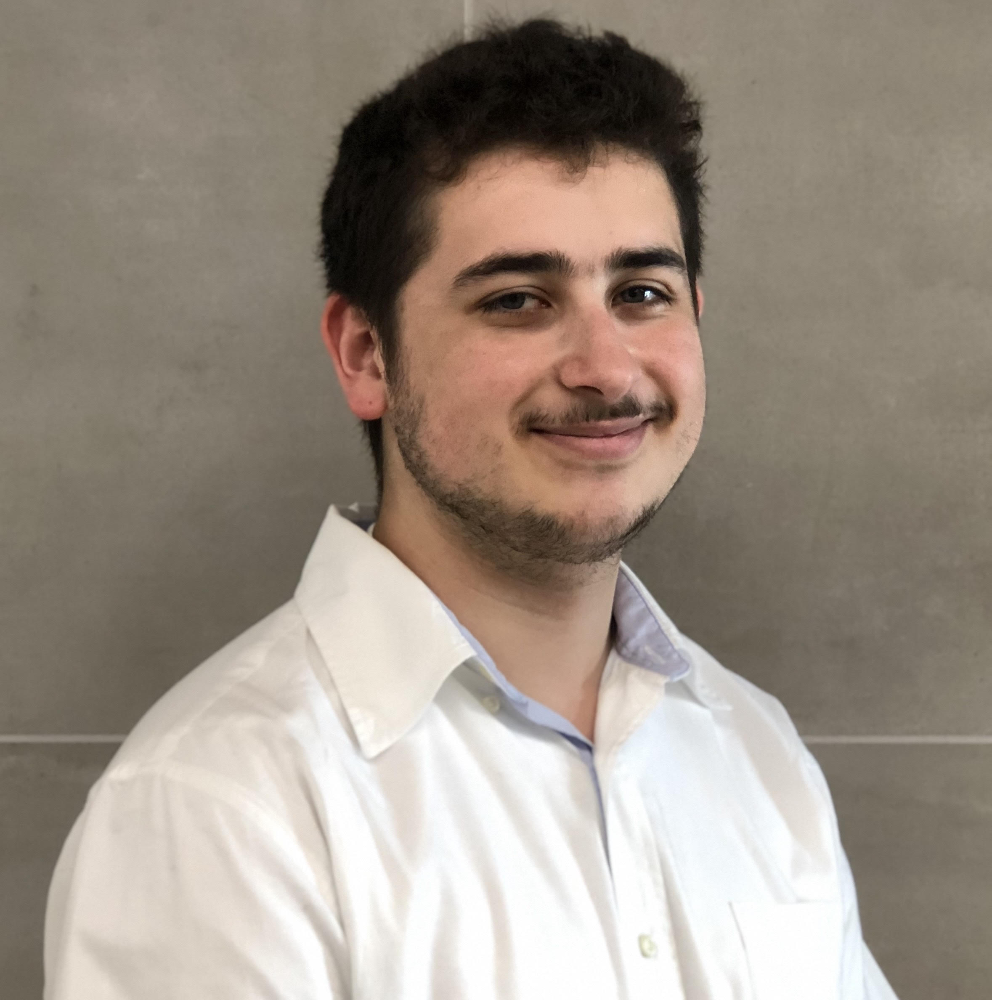

Devin's Interview quote
Q. For my first question, how did you get started with producing music in general? Where did you find the passion for it?
A. Devin - Well, for 1, I like to co-produce, but you could also call me a producer cause I do a lot and co-prod a lot. Just starting with that lol. I got started first semester freshman year because my roommate is a music major, and it gave me confidence. However, a few years ago in high school I had trade school classes where I learned audio and recording, and I’ve fell in love with somehow trying to get my voice to sound good on music lol. My passion is because music runs my life. I consume so much and I have since I was little. It’s something that really connects with people and entertain people, and as you may guess since I’m a part actor and a film major, I love entertaining people. My roommate boosted my confidence when I got to Columbia, and seeing how not super hard it is, and the creative control, it hooked me.

A quote from my friend maude!
1: I sort of always wanted to do music in some capacity ever since I was a little kid, it's just a passion and a goal I've always had. My earliest attempts at production were when I was probably like 14 or so, there was this free app called Allihoopa where you could make like 8 bar loops or something, and it didn't let you play anything out of key so it was pretty easy to make something that sounded decent. A couple years after that I got a more fleshed out free music production app, then I switched free apps a couple more times, and after a couple years of that I ended up using Ableton which I still use to this day. A quote from my friend qwertie in their interview!
I first felt the desire to use a DAW as a creative outlet when I graduated high school and stopped playing classical percussion in concert band. I still really enjoyed listening to and creating music, but it wasn’t exactly easy (or possible) to lug a marimba to my college dorm. I was racking my brain to figure out ways to still maintain a creative outlet without any physical instruments, and picking up a DAW seemed like the best option. The day I began taking my first classes as a first year college student was the day I began watching DAW tutorials online, and the rest is history.